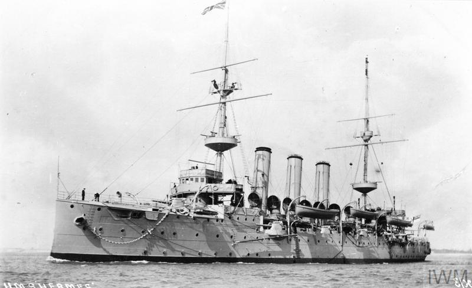

Chapter 6
Two Ships Meet in the Narrows
The explosion at 9: 04: 35 would level Richmond and kill nearly two thousand people, but its administrative trigger had already fired, in the ordinary, defensible decisions of the night before and the morning of, when the harbour’s approaches had processed two ships into the same narrow channel without authority to keep them apart. Now, with the anti-submarine net raised and the harbour open, the two vessels moved toward each other through a waterway that had never been designed for simultaneous two-way traffic of this size. One carried nothing but explosive potential; the other carried nothing at all, which made her fast, light, and difficult to slow.
At 7: 30 a. m., Pilot William Hayes stood on the bridge of the Norwegian steamer Imo as the guard ship HMCS Acadia signalled clearance to leave Bedford Basin. The ship had been delayed the previous day by the late arrival of her coal, and now she ran in ballast, her holds empty, riding high in the water. Hayes knew the channel. He had guided hundreds of vessels through the Narrows, that constriction between the outer harbour and the basin where the land closed in and the bottom shoaled and a ship lost her room to manoeuvre. The harbour’s speed limit existed for this stretch, but Imo was making up lost time. She entered the Narrows well above that limit, her single screw thrashing at full ahead.
Francis Mackey had boarded Mont-Blanc the previous evening. He was an experienced harbour pilot, one of the senior men in the local service, and he had looked at the manifest with professional attention. The steamer was a cargo steamship built in Middlesbrough, England, in 1899 for a French shipping company. On this Thursday morning, December 6, 1917, she entered Halifax Harbour laden with a full cargo of highly volatile explosives: TNT, picric acid, guncotton, and benzol in drums stacked on her deck. Mackey had asked about special protections, a guard ship perhaps, given the nature of the cargo. None had been put in place. The naval command controlled the harbour’s outer defences; the harbour master’s office controlled pilotage and movement inside; neither authority had claimed responsibility for segregating a floating magazine from ordinary traffic.
Mont-Blanc started moving at 7: 30 a. m., the second ship to pass through the net after it opened. Mackey kept his eye on the ferry traffic between Halifax and Dartmouth, the small craft that darted across the channel on their hourly runs.
The two pilots did not know each other was coming. The harbour had no central dispatch, no single point where outbound and inbound movements were plotted against each other. The naval signal station at Georges Island could see both vessels but had no authority to direct them; the harbour master’s office ashore recorded departures and arrivals after they happened. Each pilot operated with the information visible from his own bridge, and each bridge looked out on a channel that bent and narrowed and hid what lay around the next turn.
Imo came down the western side of the channel, the Dartmouth shore, making for the open sea. Mont-Blanc came up the eastern side, the Halifax shore, making for the basin. Between them the water was barely six hundred feet wide, and the navigable channel, marked by buoys and range lights, was narrower still. The pilots would later disagree about what they saw and what they did. The inquiry would preserve their disagreement rather than resolve it, and the Supreme Court of Canada would eventually split the blame between them, finding both at fault. What can be established from the record is the geometry of their approach: two large vessels converging in a space that allowed no margin for error, each moving under the command of a pilot who believed himself in the right.
At 8: 00 a. m., Imo passed the first bend and entered the straight stretch below the Narrows. Hayes saw a tug ahead, the Stella Maris, standing toward the basin with two barges in tow. The tug’s master, Captain Horatio Brannen, saw Imo approaching at excessive speed and ordered his vessel closer to the western shore to give the oncoming steamer room. This was the first evasive action of the morning, performed by a vessel with no direct stake in what followed. Brannen would remember the speed and the wake; Hayes would remember only that he had passed the tug without incident.
Mont-Blanc was then coming up from the lower harbour, her bow pointed toward the bend where the channel turned sharply to port. Mackey could see the ferry tracks crossing ahead, the small boats that did not appear on any chart of ship movements. He had reduced speed for the lower harbour, but now, approaching the straight stretch, he ordered full ahead to maintain steerage against an ebbing tide. The pilot’s concern was the turn ahead, where the channel narrowed and the current set toward the Dartmouth shore. He wanted power in hand when he reached it.
The two ships were now in the same section of the Narrows, separated by less than a mile of water and closing at a combined speed of more than eighteen knots. Imo, light and fast, drew less water than her loaded adversary; Mont-Blanc, deep and sluggish, needed more time to answer her helm. Neither vessel could stop in the distance remaining. Neither could turn around. The channel’s geography had reduced their options to two: pass each other or collide.
What happened next must be reconstructed from testimony that conflicts at every point. The inquiry took evidence from both pilots, both masters, officers on both bridges, men on the shore, sailors on nearby vessels. The accounts do not align. They cannot be forced into alignment without choosing one witness over another on grounds the record does not supply. What follows is the sequence as it can be pieced together from the documents, with the contradictions noted where they matter.
Mackey saw Imo first. He would testify that she was on his port bow, slightly to his left, coming down the wrong side of the channel. The rule of the road required that two vessels meeting head-on should each turn to starboard, passing port to port. Mackey believed Imo was violating this rule by holding to her course on the Dartmouth shore. He signalled with one blast of his whistle: I intend to pass you on my port side. This was, in effect, a demand that Imo move to her own right, toward the Halifax shore, to make a conventional port-to-port passage possible.
Hayes, on Imo’s bridge, heard the blast and interpreted it differently. He saw Mont-Blanc on his port bow, also holding to the wrong side—wrong, that is, for a starboard-to-starboard passage, which Hayes believed was the local custom in these waters. He answered with one blast of his own: I intend to pass you on my port side. The two pilots had now signalled the same thing, each believing the other would give way. Each blast meant, in the sender’s intention, that he was holding his course and the other must move. Each blast was received as a claim that the sender would move. The signals cancelled each other out.
The ships continued to close. Mackey, seeing Imo hold her course, signalled again: two blasts, indicating a turn to port, a starboard-to-starboard passage. Hayes answered with two blasts, agreeing to the manoeuvre. Both vessels began to turn. But Imo, light and fast, turned more quickly than Mont-Blanc. Her bow swung toward the Dartmouth shore, then, as Hayes tried to correct, back toward the center of the channel. The pilots would later dispute whether Hayes had ever properly begun his turn, whether Mackey had turned too far, whether the signals had been given correctly and heard correctly. What is certain is that the two vessels were now on converging courses in the narrowest part of the channel, with the current setting them together and no room to swing wide.
At 8: 45 a. m., Imo’s bow struck Mont-Blanc on the starboard side, forward of the bridge. The collision was not violent by maritime standards. The Norwegian’s steel cut into the Frenchman’s plates above the waterline, tearing a gash and scraping along the hull. Sparks flew from the grinding metal. The benzol drums on Mont-Blanc’s deck ruptured. The volatile liquid spilled, vaporised, and found a spark. Fire broke out immediately, first on the deck, then in the hold where the picric acid was stowed.
The two hulls remained locked together for a moment, then drifted apart as the current took them. Imo’s bow was damaged but not disabled; she could still move. Mont-Blanc was burning, her crew already abandoning ship. The collision had lasted seconds. The fire would last nineteen minutes. The explosion would come at 9: 04: 35.
The pilots’ testimony diverged most sharply on the question of speed and position. Mackey claimed Imo had been moving at excessive speed, had held the wrong side of the channel, and had failed to respond properly to his signals. Hayes claimed Mont-Blanc had been on the wrong side, had given confusing signals, and had turned too late. Both men were experienced; both had made hundreds of passages through these waters. Neither had ever collided before. The inquiry would find them both responsible, and the Supreme Court would affirm that judgment, though it would reduce the damages Mont-Blanc’s owners could claim by finding their own pilot equally at fault.
The structural conditions that made this disagreement possible, and that made its consequences fatal, were not in dispute. The Narrows was too narrow for two large vessels to pass with comfort. The harbour had no system for controlling simultaneous movements. The naval and civil authorities operated on parallel tracks that never converged. The pilots worked with partial information, each trusting his own judgment in the absence of any superior coordination. These were not failures of individual competence. They were the ordinary working conditions of the port, made visible by an accident that required them to be examined.
The collision itself was survivable. Ships struck each other in harbours around the world without catastrophic results. What made this collision different was the cargo that Mont-Blanc carried, and the decision to move that cargo through a port that had never been designed for it. The benzol burned with a clear flame, almost invisible in daylight. The crew abandoned ship within minutes, rowing for the Dartmouth shore or clinging to the wreckage of their own boats. The fire spread below decks, heating the picric acid and the TNT. The vessel drifted toward the Halifax shore, toward Pier 6, toward the Richmond district where the railway yards and the residential streets lay within a few hundred feet of the water.
Imo, her bow stove in, went ashore on the Dartmouth side. Her crew was safe. Her cargo was nothing. She would survive the explosion, though she would be driven ashore and damaged by the blast wave. Mont-Blanc’s crew was safe, or most of them; one man would die later of injuries. The ship herself was doomed from the moment the benzol ignited. The question was how much of Halifax would die with her.
On the shore, the collision had been heard and seen. The fire drew attention. The spectacle of a burning ship in the harbour was not, in itself, alarming; fires happened, and the city’s fire equipment was adequate for ordinary blazes. The crowd that gathered on the waterfront did not know what Mont-Blanc carried. The manifest was secret; the crew had been warned not to speak of it. The visible evidence—a steamer burning at her moorings, or drifting slowly toward the pier—suggested a manageable emergency. The invisible evidence, the tons of high explosive heating toward detonation, was known only to the crew who had fled and to a few officials who had no time to issue warnings.
The pilots, meanwhile, were beginning the process that would occupy the next months and years: the construction of defensible accounts. Mackey would write his report, Hayes his, each man selecting from his memory the details that supported his version of events. The inquiry would take their testimony, and that of others, and would find that both pilots had been at fault. The Supreme Court would agree. The Privy Council in London, hearing the final appeal, would affirm the division of blame. No single judgment would settle the question of who had caused the collision, because the collision had been caused by a system in which no single authority held enough information to prevent it.
The two hulls were now separated, each damaged, each moving with the current. Mont-Blanc drifted toward the Halifax shore, her deck a sheet of flame, her holds a furnace. The time was approximately 8: 45 a. m. The explosion would come at 9: 04: 35. Between those two moments lay nineteen minutes of visible fire and invisible chemical reaction, of gathering crowd and unissued warning, of a city approaching a catastrophe that none of its inhabitants yet recognised.
The Narrows had never been engineered for this encounter. The channel had been dredged to accommodate the shipping of the 1880s, when the largest vessels drawing Halifax coal or carrying West Indies sugar measured half the tonnage now bearing down upon each other. The range lights on Georges Island and the western shore provided alignment for single-file traffic, not for simultaneous opposing movement. The buoys marked a fairway wide enough for one ship to swing at anchor, not for two to pass with the margin of error that steam navigation required. The very name—“the Narrows”—spoke of constriction, yet the port’s growth had proceeded as if the geography were negotiable, as if the addition of more powerful engines and more experienced pilots could overcome the fact of a glacial valley flooded by the sea and pinched to less than two hundred meters between bedrock shores.
Pilot Mackey, standing on Mont-Blanc’s bridge, could read this geography with the intimacy of thirty years’ practice. He knew how the ebb tide set across the channel below the first bend, how the wind funneled between the heights of Halifax and Dartmouth, how the bottom shoaled abruptly on the eastern side where the old ferry wharf had once stood.
These were not abstract facts from a chart; they were sensations in his body, the angle of heel that meant shallow water, the change in engine vibration that signaled the tug of current against rudder. When he ordered full ahead approaching the straight stretch, he was not merely maintaining speed but building the reserve of water flow across his rudder that the turn would demand. The loaded ship answered slowly, her deep draft making her steady but unresponsive, a mass that could be directed only gradually and could never be recalled once committed.
On Imo’s bridge, Pilot Hayes operated with the opposite physics. The ballasted steamer rode high, her propeller thrashing near the surface, her rudder effective at speeds that would have made Mont-Blanc sluggish. This was the vessel’s intended condition for the Atlantic crossing ahead, but it transformed her behavior in confined waters. She turned faster, she stopped slower, her light draft made her susceptible to the wind that was now rising from the northwest. Hayes had spent his career managing these characteristics, but always with the assumption that opposing traffic would be visible in time, that the channel’s bends would reveal rather than conceal, that the other vessel would be governed by the same calculations of mass and momentum that governed his own.
The absence of a harbor master with real-time authority meant that both pilots were navigating against an imagined opponent, constructing the other ship’s likely position from partial evidence and professional habit. Mackey knew that Imo had cleared Bedford Basin; he had seen the signal from Acadia as he himself waited for the net to rise. But he did not know her speed, her exact course, whether Hayes intended to pass the tug Stella Maris close aboard or stand wide. Hayes knew that Mont-Blanc had entered the harbor, but he did not know she was already approaching the Narrows, that her pilot had accelerated to meet the turn, that their paths would converge at the worst possible point where the channel narrowed and the current ran strongest. Each man carried a different fragment of the situation, and neither fragment was sufficient.
The naval signal station on Georges Island embodied this fragmentation. Its personnel could see both vessels through their glasses, could measure the closing angle, could calculate the moment of convergence with the precision of trained observers. But their function was defensive, directed outward toward submarine threats, not inward toward collision prevention. The harbor master’s office ashore maintained records, collected fees, assigned pilots to incoming vessels after they had been cleared by naval inspection.
The pilots had done what they believed correct. The signals had been given and answered according to each man’s understanding. The channel had been navigated, the collision had happened, and now the fire burned on the water. The administrative trigger had fired in the decisions that sent two ships into the same narrow passage without coordination. The physical trigger would fire when the heat in Mont-Blanc’s holds reached the temperature of detonation. The interval between those two events was not empty time. It was filled with the actions of people who did not yet know they were in danger, and with the slow, irreversible chemistry of burning explosives.
The ships had met in the Narrows. The collision was now a fixed event, recorded in the testimony that would be taken and retaken, in the judgments that would be rendered and appealed, in the pensions that would be paid for decades to come. The fire on Mont-Blanc’s deck was visible from the Richmond shore. The first flames had found the benzol, the benzol had found the woodwork, and the woodwork would find the high explosive stowed below. The hulls were locked no longer, but the consequences of their meeting were only beginning.
